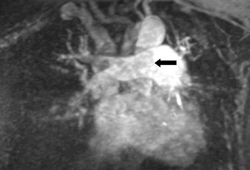

+Evidence: Risks of CTPA
Radiation from CT is considered to be a risk factor for cancer.
The contrast dye used in CTPA for the evaluation of PE may cause nephropathy.
Repeated imaging is common which may magnify these risks.
More widespread use of CTPA may lead to overdiagnosis of subsegmental PEs that are often of little clinical significance
+Evidence: The predictive value of CTPA depends on the pre-test probability of PE
The PIOPED II trial highlighted the influence of clinical probability on the predictive value of CTPA. [PIOPED]
PRACTICAL TIP/PITFALL PANEL]
A negative echocardiography does not exclude PE. [ESC]
Assessment of RV function on echocardiography is not obligatory for the identification of low-risk patients who are suitable for outpatient management. [BTS]
[END OF PANEL]
PRACTICAL TIP/PITFALL PANEL]
Remember that a D-dimer level is a continuous variable.
In practice, many people have a raised D-dimer without having a PE.
[END PANEL]
Baseline values
An ECG is not diagnostic of PE but can be useful to support the diagnosis of PE or rule out other causes.
+Evidence: Some ECG signs are predictors of a poor outcome
Baseline values
Baseline values
Baseline values
A normal CXR does not eliminate PE as a diagnosis, and findings may only be suggestive of PE. [142]
May show Fleischner's sign/prominent central pulmonary artery (20%); Westermark sign/oligaemia in PE's area of distribution (11%); Hampton hump/pleural-based areas of increased opacity corresponding to the distribution of the PE (27%). [92] [108] [118] [143]
CXR is the first radiation-associated procedure if PE is suspected in pregnancy. [119]
band atelectasis, elevation of hemidiaphragm, prominent central pulmonary artery, oligaemia at site of embolism
Three different techniques available: gadolinium-contrast enhanced angiography (Gd-MRA), real time angiography (RT-MRA), and MR-perfusion images. [144]  [Figure caption and citation for the preceding image starts]: Gd-MRA showing a right main pulmonary artery pulmonary embolism (see arrow) From the collection of Seth W. Clemens; used with permission [Citation ends].
Can be used to evaluate the central and segmental arteries. [142]
High specificity (91% to 98%) allows for accurate diagnosis.
Low sensitivity (75% to 93%) cannot reliably exclude PE with a negative test. [144]
Gadolinium contrast, used in Gd-MRA and MR perfusion studies, is a relative contraindication in pregnancy.
diagnosis is confirmed by direct visualisation of thrombus in a pulmonary artery; appears as a partial or complete intraluminal filling defect
Despite its diagnostic accuracy, pulmonary angiography is rarely used for the diagnosis or exclusion of PE. [76] [145] It is associated with risk of morbidity/mortality, and (less invasive) CTPA affords comparable diagnostic precision. [76] [115]
Negative predictive value may be as high as 99%. [146]
Invasive test with morbidity of 3% to 6% and a mortality of 0.2% to 0.5%. [115] [147]
Involves the use of contrast; a relative contraindication in pregnancy and renal failure.
diagnosis made by visualisation of a complete or incomplete filling defect in the pulmonary artery
ECG cannot definitively establish or eliminate PE as a diagnosis, and specific findings may only be suggestive of PE. [84] [148] [108]
ECG can, however, be used to assess right ventricular function in patients with confirmed PE without shock or hypotension. [76] [109] Right ventricular dysfunction is predictive of adverse outcome and enables risk stratification in these patients. [149] [150] [151]
If a definitive imaging modality is unavailable, echocardiography may be considered for patients with suspected PE presenting with shock or hypotension. [76] [101]
right ventricular dysfunction; right ventricular enlargement
ABG analysis is of very limited diagnostic utility, alone or in combination with other clinical variables, in suspected PE. [152]
In the absence of cardiopulmonary disease, PE could not be excluded in 38% of patients with normal ABG results (i.e., not suggestive of PE). [118]
In pre-existing cardiopulmonary disease, PE could not be excluded in 14% of patients with normal ABG results (i.e., not suggestive of PE). [118]
hypoxia and hypocapnia may be suggestive
Not indicated in all cases of incident venous thromboembolic events; however, it may be useful if the site of thrombus is unusual, if there is a large clot burden, or if there are recurrent events.
Thrombophilia screening should be deferred until a minimum of 3 months of anticoagulant therapy has been completed because some thrombophilia tests are influenced by the presence of acute thrombosis or anticoagulant therapy. [153]
Alternatively, a two-stage screening approach may be implemented whereby tests for thrombophilia that can reliably be done during initial anticoagulation (i.e., factor V Leiden, prothrombin G20210A mutation, cardiolipin, and beta-2 glycoprotein-I antibodies) are performed and, if normal, anticoagulation is discontinued. Remaining tests, whose serum levels may be decreased in the hyperacute phase of thrombus formation or due to the use of anticoagulants (i.e., lupus anticoagulant, protein C, protein S, antithrombin) are then conducted. [153]
positive in inherited thrombophilias
Bilateral venous compression ultrasound to establish the presence of thrombosis suggestive of PE is recommended in pregnant patients with suspected PE. [119]
inability to fully compress lumen of vein using ultrasound transducer
Use of this content is subject to our disclaimer